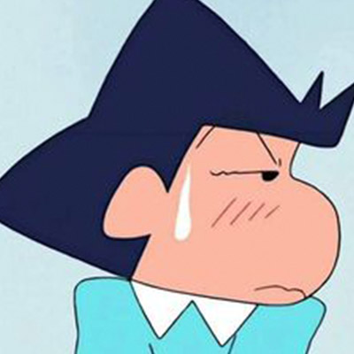
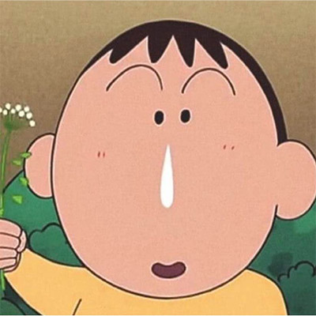
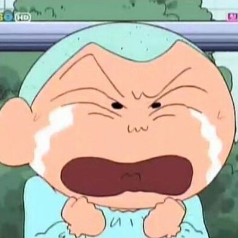

About zzangu
짱구는 장난꾸러기 다섯살 소년이에요. 액션가면을 좋아하고 초코비 과자를 특히 사랑해요 엉뚱한 행동과 말썽으로 주변 사람들을 놀라게 하지만 마음만은 따뜻하고 가족과 친구를 소중히 여겨요 항상 웃음을 주는 짱구는 모두에게 사랑받는 캐릭터입니다.
Zzangu's Characteristics
- 장난꾸러기 성격
- 엉뚱하지만 따뜻한 마음
- 독특한 춤과 말투
Zzangu's Friends
철수에요. 똑똑하고 어른스러운 척 하지만 은근 허당인 친구
맹구에요. 말수가 적고 엉뚱하지만 순수한 마음을 가진 친구
훈이에요. 항상 선생님 말씀을 잘 따르는 착하고 모범적인 친구